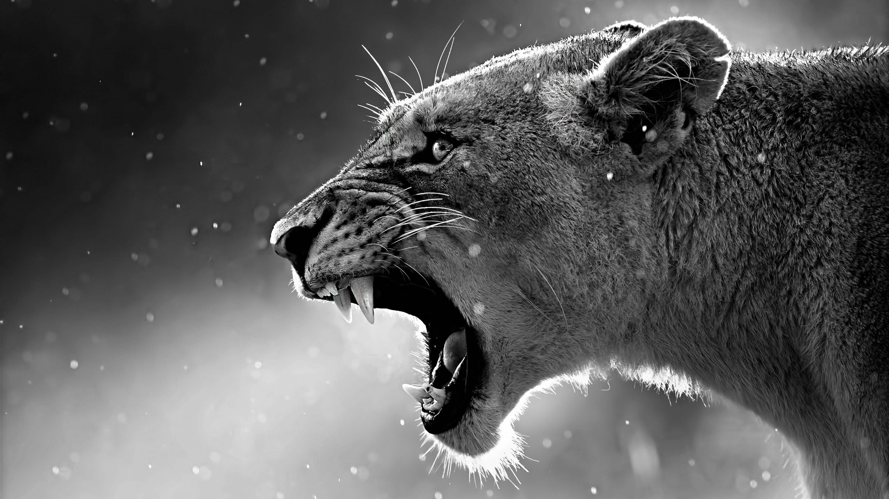
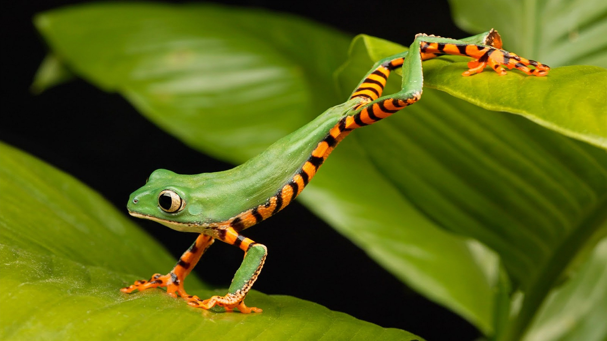
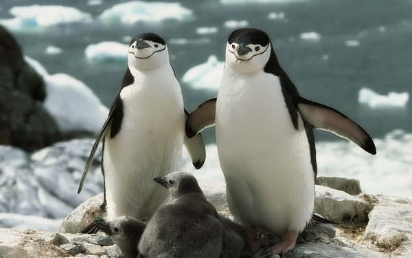
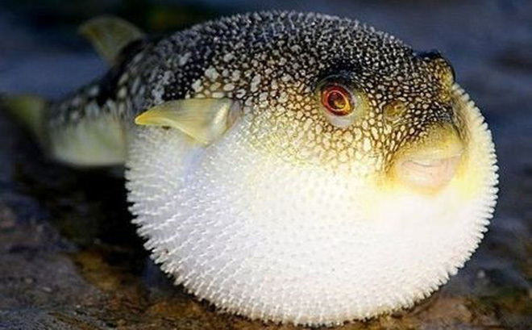

CÁC LOÀI ĐỘNG VẬT!
Cùng Đi Khám Phá Các Loài Động Vật Nào!
Sư tử (Panthera leo), (tiếng Anh: Lion) là một trong những đại miêu trong họ Mèo và là một loài của chi Báo.Được xếp mức sắp nguy cấp trong thang sách Đỏ IUCN từ năm 1996, các quần thể loài này ở châu Phi đã bị sụt giảm khoảng 43% từ những năm đầu thập niên 1990.
Trong văn hóa phương Tây, sư tử được mệnh danh là "chúa tể rừng xanh" (king of the jungle) hay "vua của muôn thú" (king of beasts).
Sư tử là loài dị hình giới tính; con đực lớn hơn con cái với phạm vi trọng lượng điển hình từ 150 đến 250 kg (330 đến 550 lb) đối với con đực và 120 đến 182 kg (265 đến 400 lb) đối với con cái, là loài lớn thứ nhì họ Mèo sau hổ Đông Bắc Á.
Sư tử đực có thể dễ dàng được nhận ra từ xa bởi bờm của chúng. Sư tử hoang hiện sinh sống ở vùng châu Phi hạ Sahara và châu Á (nơi quần thể còn sót lại cư ngụ ở vườn quốc gia Rừng Gir thuộc Ấn Độ), các phân loài sư tử tuyệt chủng từng sống ở Bắc Phi và Đông Nam Á.
Cho tới cuối Pleistocene, khoảng 10 000 năm trước, sư tử là động vật có vú có phân bố rộng thứ 2 chỉ sau con người.
Khi đó, chúng sống ở hầu khắp châu Phi, ngang qua lục địa Á-Âu từ miền Tây Âu tới Ấn Độ, và châu Mỹ từ Yukon tới Peru.[5] Sư tử là loài sắp nguy cấp, chúng đã được liệt kê là loài dễ bị tổn thương trong sách đỏ IUCN kể từ năm 1996 bởi vì những quần thể sư tử ở các nước châu Phi đã giảm khoảng 43% kể từ đầu những năm 1990.
Nhiều quần thể sư tử không được bảo vệ bên ngoài những khu vực được chỉ định bảo vệ.
Mặc dù nguyên nhân của sự suy giảm chưa được làm rõ một cách đầy đủ, nhưng mất môi trường sống và xung đột với con người là những nguyên nhân lớn nhất.
 Hổ hay còn gọi là cọp hoặc hùm (và các tên gọi khác như Ông ba mươi, kễnh, khái) là một loài động vật có vú thuộc Họ Mèo được xếp vào một trong năm loài "mèo lớn" thuộc chi Panthera
Hổ hay còn gọi là cọp hoặc hùm (và các tên gọi khác như Ông ba mươi, kễnh, khái) là một loài động vật có vú thuộc Họ Mèo được xếp vào một trong năm loài "mèo lớn" thuộc chi Panthera Hổ là một loài thú ăn thịt, chúng dễ nhận biết nhất bởi các sọc vằn dọc sẫm màu trên bộ lông màu đỏ cam với phần bụng trắng.
Hổ là loài thú lớn nhất trong họ Mèo và là động vật lớn thứ ba trong các loài thú ăn thịt (sau gấu Bắc Cực và gấu nâu).
Hổ là một trong những loài động vật có biểu tượng lôi cuốn và dễ nhận biết nhất trên thế giới với những sọc vằn vện không lẫn vào đâu được.
Chúng nổi bật trong thần thoại và văn hóa dân gian cổ đại, tiếp tục được miêu tả trong các bộ phim và văn học hiện đại, xuất hiện trên nhiều lá cờ, phù hiệu áo giáp và làm linh vật cho các đội tuyển thể thao.
Đặc biệt trong văn hóa phương Đông, hổ được mệnh danh là "chúa sơn lâm". Do đó, chúng là biểu tượng quốc gia của nhiều nước như Ấn Độ, Bangladesh, Malaysia và Hàn Quốc.
 Loài ếch xanh mắt đỏ ở Trung Mỹ có màu sắc sặc sỡ giúp ngụy trang giữa các loại cây cỏ, đặc biệt chúng còn có khả năng nhảy cao đáng kinh ngạc trong họ nhà ếch.
Còn về loài ếch nhái không đuôi, thân ngắn, da trơn, màu sẫm, sống ở ao đầm, thì thịt ăn được.
 Chim cánh cụt hay còn gọi là chim cụt cánh (bộ Sphenisciformes, họ Spheniscidae - lấy theo chi Spheniscus nghĩa là hình nêm) là một nhóm chim nước không bay được.
Chúng hầu như chỉ sống ở Nam bán cầu, với duy nhất một loài, chim cánh cụt Galápagos, được tìm thấy ở phía bắc đường xích đạo.
Vốn rất thích nghi cho cuộc sống trong nước, chim cánh cụt có bộ lông tương phản nhau gồm các mảng sáng và tối và chân chèo để bơi lội.
Hầu hết chim cánh cụt ăn nhuyễn thể, cá, mực và các dạng sinh vật biển khác mà chúng bắt được khi bơi dưới nước.
Chúng dành khoảng một nửa cuộc đời trên cạn và nửa còn lại ở biển.
Cá là những động vật có dây sống, phần lớn là ngoại nhiệt (máu lạnh), có mang (một số có phổi) và sống dưới nước.
Hiện người ta biết khoảng trên 31.900 loài cá[1], điều này làm cho chúng trở thành nhóm đa dạng nhất trong số các động vật có dây sống.
Sự biến nhiệt cho phép thân nhiệt của chúng biến đổi theo sự thay đổi nhiệt độ của môi trường, mặc dù một số loài cá lớn có hoạt động bơi lội tích cực như cá mập trắng lớn và cá ngừ có thể duy trì một nhiệt độ cơ thể cao hơn[2][3].